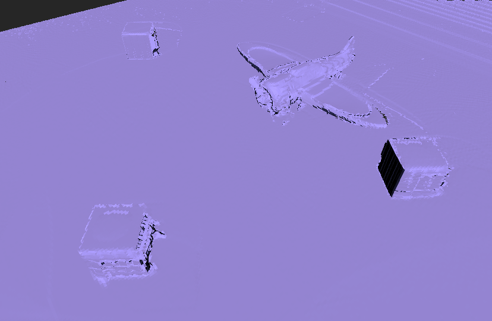
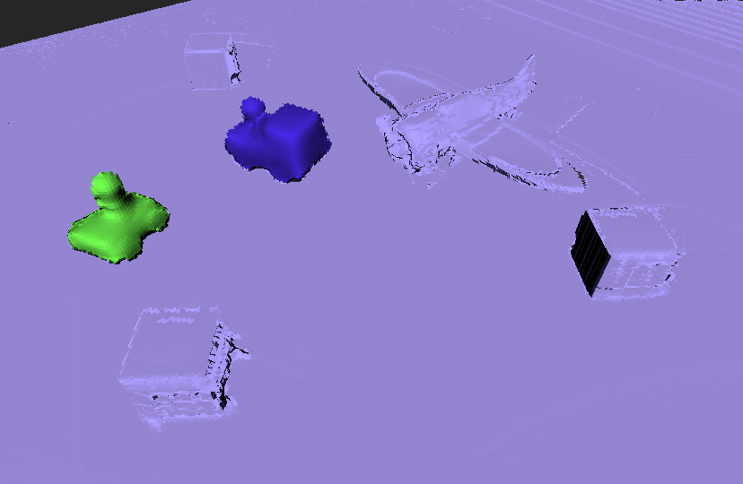

Publications


Volumetric Instance-Aware Semantic Mapping and 3D Object Discovery
Margarita Grinvald, Fadri Furrer, Tonci Novkovic, Jen Jen Chung, Cesar Cadena, Roland Siegwart, Juan Nieto, Robotics and Automation Letters, 2019.★ IROS Best Cognitive Robotics Paper Award Finalist ★
Paper, Video, Slides, Poster, Code